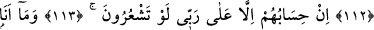

SİZDEN HİÇBİR ÜCRET
İSTEMİYORUM
105. Nuh kavmi de peygamberleri yalancılıkla suçladılar.
106. Kardeşleri Nuh onlara şöyle demişti: (Allah’a karşı gelmekten) sakınmaz
mısınız?
107. Bilin ki ben, size gönderilmiş güvenilir bir elçiyim.
108. Artık Allah’a karşı gelmekten sakının ve bana itaat edin.
109. Buna karşı sizden hiçbir ücret istemiyorum. Benim ecrimi verecek olan,
ancak âlemlerin Rabbidir.
110. O halde Allah’tan korkun ve bana itaat edin.
111. Onlar şöyle cevap verdiler: Sana düşük seviyeli kimseler tâbi olup dururken,
biz sana iman eder miyiz hiç!
112. Nuh dedi ki: Ben onların yaptıklarını(n iç yüzünü) bilmem.
113. Onların hesabı ancak Rabbime aittir. Bir düşünseniz!
114. Ben iman eden kimseleri kovacak değilim.
115. Ben ancak apaçık bir uyarıcıyım.
116. Dediler ki: Ey Nuh! (Bu davadan) vazgeçmezsen, iyi bil ki, taşlanmışlardan
olacaksın!
117. Nuh dedi ki: Rabbim, kavmim beni yalancılıkla suçladı.
118. Artık benimle onların arasında sen hükmünü ver. Beni ve beraberimdeki